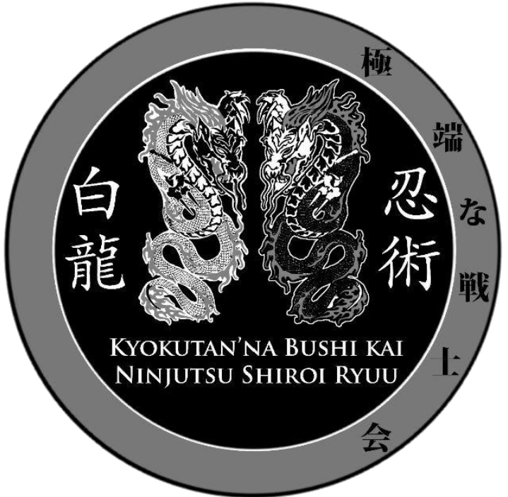

Bem vindos(a) a
Escola
Dragão branco
A shiroi Ryuu conta com com três centros de treinamento.
| Kiokutana senshi kay | Redes sociais |  | A kiokutana Senshi kay(sociedade do guerreiro extremo) é uma célula da Shiroi Ryuu ninjutsu que
ofecere gratuitamente aulas de ninjutsu nos dias de terça, quinta e sabados das 19:30 até ás 21:30 ela se encontra na região do Brás-SP ao lado do templo de salomão. |
|
|---|
 facebook
facebook Instagran
Instagran | Redes sociais | Shinsei Dojo |
|
A shinsei Dojo é um das céluas da Shiroi Riuu na qual temos como lideres a shidoin tereza na faixa
de gure obi(faixa cinza) e o shidoin Rafael, A Shinsei Dojo se encontra na região do Parque Dom pedro-sp
|

|
|---|
| Shiroi Ryuu | Redes sociais |

|
A kiokutana Senshi kay(sociedade do guerreiro extremo) é uma célula da Shiroi Ryuu ninjutsu que
ofecere gratuitamente aulas de ninjutsu nos dias de terça, quinta e sabados das 19:30 até ás 21:30 ela se encontra na região do Brás-SP ao lado do templo de salomão. |
|
|---|